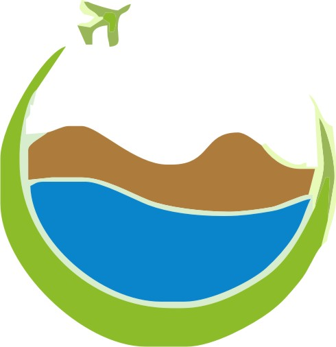

Site description
The purpose of this document ........................
Site Name
This site is going to be called ,,,,,,,,.............................click link to know more.
Branding
Website Logo
Style Guide
Color Palette
Palette URL: https://coolors.co/4583b0-a43312-28151e-e4b93a-aabd8c| Primary | Secondary | Accent 1 | Accent 2 |
|---|---|---|---|
| #e4b93a | #aabd8c | #4583b0 |